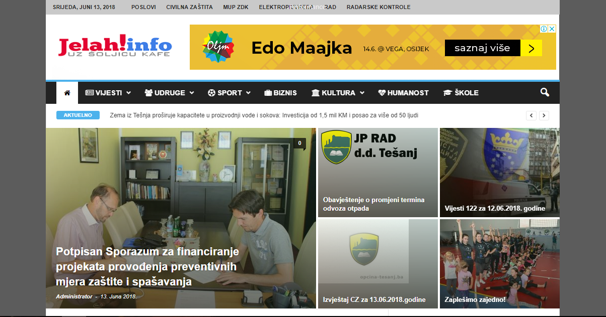
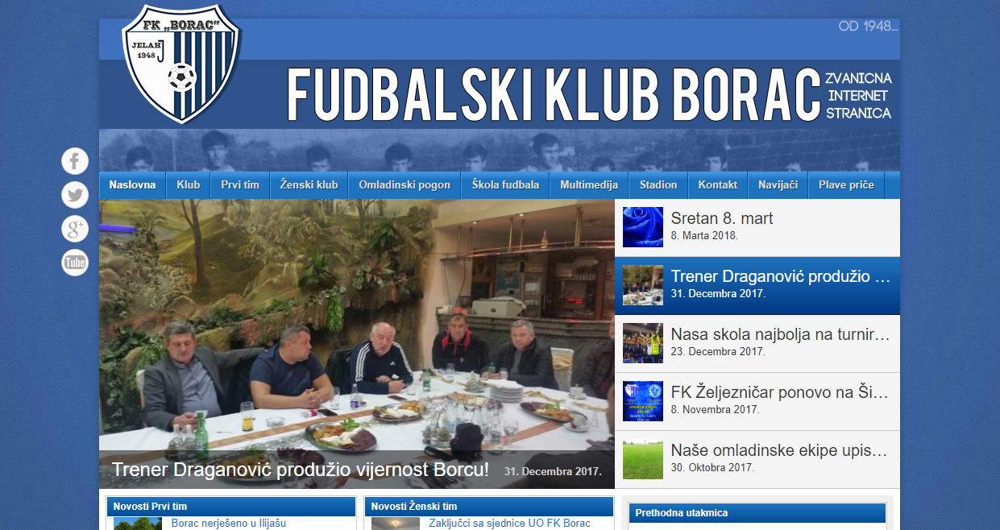
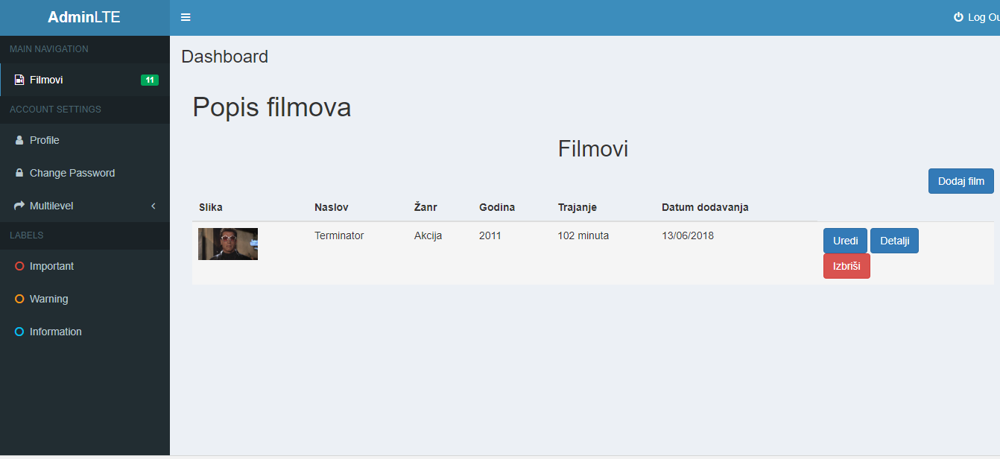

Zovem se Danijel Križanović, rođen sam 2.10.1989 godine. Nakon osnovne škole životni put nastavio sam u Ekonomskoj školi nakon koje sam upisao Pravni fakultet u Osijeku. Znatiželja i interes za IT sektor pojavili su se kroz igru u srednjoj školi što je vodilo ka web dizajnu i novom najdražem hobiju.
Prvi radovi bile su html stranice u Dreamvieweru nakon čega je rad nastavljen sa CMS sustavima.
Jelah.info (WP)
Stranica namjenjena lokalnoj sredini.
Napravljena iz hobija,
svakodnevno se objavljuju lokalne vijesti koje su povezane s Facebook-om.
Fkborac.ba(WP)
Stranica lokalnog nogometnog kluba
Videoteka (Laravel)
Projekt rađen u Laravelu. Jednostavna CRUD
aplikacija za dodavanje, uređivanje i brisanje filmova.
#095#8957308